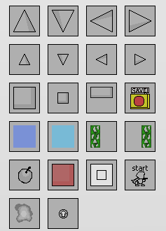

Palette
The palette refers to the selction of placeable objects in the sidebar. The object "oPalette" controls the logic and drawing of the palette.
How to add your own palette object
- Create the object - Should be in the "palette" folder. Set the sprite and mask index to the following two sprites.
- Create the normal sprite - Should be in the "skin" folder. This sprite will be replaced when loading skins, and should be the object's sprite index.
- Create the default skin sprite - Should be in the "skin defaults" folder. This sprite serves as a default if no relpacement sprite for the object is provided in a skin, and also serves as the mask for the object, which should never change. Don't forget to enable precise collisions if you wish.
- Edit the script objectIsEdit - Add your object to the switch statement, so various parts of the tool can tell that your new object should be erased when clearing the map, etc.
The following steps only apply if you want to fully integrate the palette object, meaning it's saved and loaded from map files and reskinned by skins. This is mainly here for Patrick to read if adding objects supported in a new official version.
- TODO: Edit the script editObjectSerialize?
- TODO: Edit the script createFromSerialization?
- Add to script loadSkin
- Add to palette - In oPalette's draw event
